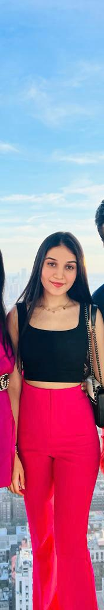

My Name is Nishka Ranka
About A Student
About A Student

Hi,Im Nishka Ranka!Im 19 years old and I was born and brought up in India.
My hobbies are singing, swimming, track and field, and I enjoy song writing as well.
RESUME
EDUCATION AND TRAINING
Symbiosis International School, Pune , 05/2021 High School
Diploma St Mary's School, Pune , 03/2019 High School Diploma Babson College Marketing And
Entrepreneurship
Business Venture: Owner, Nishka - Jewellery for Generations
https://www.rankajewellersindia.com/ I Launched my line of multifunctional jewellery, curating
pieces to be built up & layered for several occasions for teens, from casual to party wear.
Internships & Jobs Marketing intern, Ranka Jewellers & Rare Jewels, Pune I Researched the
pain points of COVID 19 impact on the jewellery business; shared a presentation on how to
recover lost ground with the management team.
Internships & Jobs Research intern
, Jairaj Foods; Rio Beverages (F&B Markets) I Analyzed the
lockdown impact on essential items (food grains) & semi-essential (soft drinks) services and
presented it in front of their team.
Marketing intern
, Magicrise; Milestones Entertainment, Pune Prepared content buckets for both
event management firms, created ideas on the representation of the brand and drafted posts for
two months. I Suggested creative ideas on the representation of the brand
Co-founder, The Pooch Project Initiated & spread awareness for stray dogs & cats
, which
entailed feeding, adopting & rescuing them regardless of their breed, age, or disability.
Music - Founding Member & Performer
, Sym Beat (head of the music club and school band)
Live-streamed concert; held virtual competition; raised funds for Snehalaya Foundation; started
a 20-member music club; and uploaded videos on Instagram.
Menstruation Awareness Drive
Donated 1000 sanitary napkins to slum women; educated them
about menstrual hygiene, overcoming repressive cultural norms & religious censorship.
Singer and song-writer
I released my own single "Fly" by Nishka Ranka which streamed on
various platforms like apple music, Spotify and youtube music.
Marketing Manager
- 08/2021 - 04/2022 Apply-IT Startup, Wellsley, United States Of America I
Developed social media marketing strategies to help brand companies and increase sales. I
also Managed the creation of marketing materials and sales support tools.